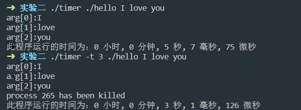
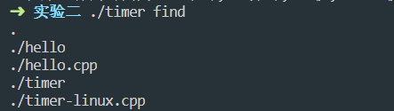
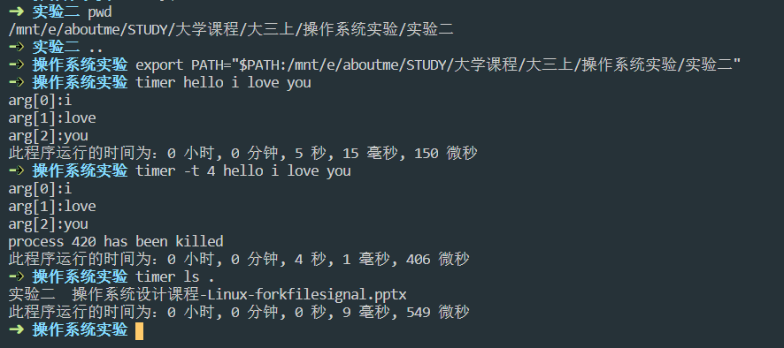
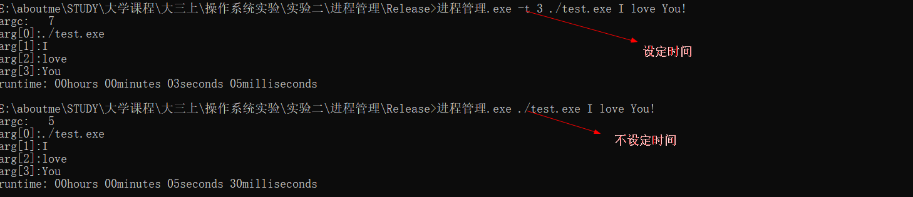
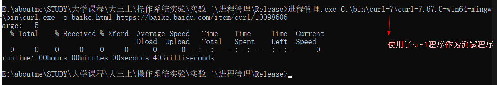
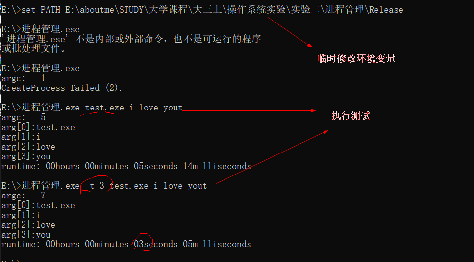

这里实现的是一个自定义timer用于统计子进程运行的时间。使用方式主要是
timer [-t seconds] command arguments例如要统计ls的运行时间可以直接输入timer ls，其后的arguments是指所要运行的程序的参数。如：timer ls -al。如果要指定程序运行多少时间，如5秒钟，可以输入timer -t 5 ls -al。需要注意的是，该程序对输入没有做异常检测，所以要确保程序输入正确。
获取时间
时间获取函数使用gettimeofday，精度可以达到微秒
struct timeval{
long tv_sec;*//秒*
long tv_usec;*//微秒*
}子进程创建
fork()函数
#include <sys/types.h>
#include <unistd.h>
pid_t fork(void);fork调用失败则返回-1，调用成功则：
fork函数会有两种返回值，一是为0，一是为正整数。若为0，则说明当前进程为子进程；若为正整数，则该进程为父进程且该值为子进程pid。关于进程控制的详细说明请参考：进程控制
exec函数
用fork创建子进程后执行的是和父进程相同的程序（但有可能执行不同的代码分支），子进程往往要调用一种exec函数以执行另一个程序。当进程调用一种exec函数时，该进程的用户空间代码和数据完全被新程序替换，从新程序的启动例程开始执行。调用exec并不创建新进程，所以调用exec前后该进程的id并未改变。
其实有六种以exec开头的函数，统称exec函数：
#include <unistd.h>
int execl(const char *path, const char *arg, ...);
int execlp(const char *file, const char *arg, ...);
int execle(const char *path, const char *arg, ..., char *const envp[]);
int execv(const char *path, char *const argv[]);
int execvp(const char *file, char *const argv[]);
int execve(const char *path, char *const argv[], char *const envp[]);这些函数如果调用成功则加载新的程序从启动代码开始执行，不再返回，如果调用出错则返回-1，所以exec函数只有出错的返回值而没有成功的返回值。
wait与waitpid
一个进程在终止时会关闭所有文件描述符，释放在用户空间分配的内存，但它的PCB还保留着，内核在其中保存了一些信息：如果是正常终止则保存着退出状态，如果是异常终止则保存着导致该进程终止的信号是哪个。这个进程的父进程可以调用wait或waitpid获取这些信息，然后彻底清除掉这个进程。我们知道一个进程的退出状态可以在Shell中用特殊变量$?查看，因为Shell是它的父进程，当它终止时Shell调用wait或waitpid得到它的退出状态同时彻底清除掉这个进程。
如果一个进程已经终止，但是它的父进程尚未调用wait或waitpid对它进行清理，这时的进程状态称为僵尸（Zombie）进程。任何进程在刚终止时都是僵尸进程，正常情况下，僵尸进程都立刻被父进程清理了。
僵尸进程是不能用kill命令清除掉的，因为kill命令只是用来终止进程的，而僵尸进程已经终止了。
#include <sys/types.h>
#include <sys/wait.h>
pid_t wait(int *status);
pid_t waitpid(pid_t pid, int *status, int options);若调用成功则返回清理掉的子进程id，若调用出错则返回-1。父进程调用wait或waitpid时可能会：
阻塞（如果它的所有子进程都还在运行
出错立即返回（如果它没有任何子进程）
这两个函数的区别是：
timer源代码
#include <math.h>
#include <stdio.h>
#include <stdlib.h>
#include <sys/time.h>
#include <unistd.h>
#include <wait.h>
#include <ctime>
#include <iostream>
#include <cstring>
//程序假定输入完全正确，没有做异常处理
//mytime [-t number] 程序
using namespace std;
//调用系统时间
struct timeval time_start;
struct timeval time_end;
void printTime();
void newProcess(const char *child_process, char *argv[], double duration);
int main(int argc, char const *argv[])
{
double duration = 0;
char **arg;
int step = 2;
if (argc > 3 && (strcmp((char *)"-t", argv[1]) == 0)) //如果指定了运行时间
{
step = 4;
duration = atof(argv[2]); //没有做异常处理
}
arg = new char *[argc - step + 1];
for (int i = 0; i < argc - step; i++)
{
arg[i] = new char[100];
strcpy(arg[i], argv[i + step]);
}
arg[argc - step] = NULL;
newProcess(argv[step - 1], arg, duration);
return 0;
}
void printTime()
{
//用以记录进程运行的时间
int time_use = 0; // us
int time_left = 0; // us
int time_hour = 0, time_min = 0, time_sec = 0, time_ms = 0, time_us = 0;
gettimeofday(&time_end, NULL);
time_use = (time_end.tv_sec - time_start.tv_sec) * 1000000 + (time_end.tv_usec - time_start.tv_usec);
time_hour = time_use / (60 * 60 * (int)pow(10, 6));
time_left = time_use % (60 * 60 * (int)pow(10, 6));
time_min = time_left / (60 * (int)pow(10, 6));
time_left %= (60 * (int)pow(10, 6));
time_sec = time_left / ((int)pow(10, 6));
time_left %= ((int)pow(10, 6));
time_ms = time_left / 1000;
time_left %= 1000;
time_us = time_left;
printf("此程序运行的时间为：%d 小时, %d 分钟, %d 秒, %d 毫秒, %d 微秒\n", time_hour, time_min, time_sec, time_ms, time_us);
}
void newProcess(const char* child_process, char **argv, double duration)
{
pid_t pid = fork();
if (pid < 0) //出错
{
printf("创建子进程失败！");
exit(1);
}
if (pid == 0) //子进程
{
execvp(child_process, argv);
}
else
{
if (abs(duration - 0) < 1e-6)
{
gettimeofday(&time_start, NULL);
wait(NULL); //等待子进程结束
printTime();
}
else
{
gettimeofday(&time_start, NULL);
// printf("sleep: %lf\n", duration);
waitpid(pid, NULL, WNOHANG);
usleep(duration * 1000000); // sec to usec
int kill_ret_val = kill(pid, SIGKILL);
if (kill_ret_val == -1) // return -1, fail
{
printf("kill failed.\n");
perror("kill");
}
else if (kill_ret_val == 0) // return 0, success
{
printf("process %d has been killed\n", pid);
}
printTime();
}
}
}测试源代码
#include <iostream>
#include <ctime>
#include <unistd.h>
using namespace std;
int main(int argc, char const *argv[])
{
for(int n = 0; n < argc; n++)
{
printf("arg[%d]:%s\n",n, argv[n]);
}
sleep(5);
return 0;
}自行编写程序测试

系统程序测试

将timer加入环境变量
这里仅进行了临时变量修改。

在Windows下进行父子进程的创建和管理在api调用上相较Linux有一定难度，但实际上在使用管理上比Linux容易的多。
#include <Windows.h>
BOOL CreateProcessA(
LPCSTR lpApplicationName,
LPSTR lpCommandLine,
LPSECURITY_ATTRIBUTES lpProcessAttributes,
LPSECURITY_ATTRIBUTES lpThreadAttributes,
BOOL bInheritHandles,
DWORD dwCreationFlags,
LPVOID lpEnvironment,
LPCSTR lpCurrentDirectory,
LPSTARTUPINFOA lpStartupInfo,
LPPROCESS_INFORMATION lpProcessInformation
);timer程序
// 进程管理.cpp : 此文件包含 "main" 函数。程序执行将在此处开始并结束。
//
#include <iostream>
#include <wchar.h>
#include <Windows.h>
#include <tchar.h>
using namespace std;
void printTime(SYSTEMTIME* start, SYSTEMTIME* end);
void newProcess(TCHAR* cWinDir, double duration);
int _tmain(int argc, TCHAR *argv[])
{
TCHAR* cWinDir = new TCHAR[MAX_PATH];
memset(cWinDir, sizeof(TCHAR) * MAX_PATH, 0);
printf("argc: %d\n", argc);
int step = 1;
double duration = 0;
if (argc > 1)
{
if (argv[1][0] == TCHAR('-') && argv[1][1] == TCHAR('t') && argv[1][2] == TCHAR('\0'))
{
step = 3;
duration = atof((char*)argv[2]);
}
}
//printf("printf content start: %ls\n", argv[1]);
int j = 0;
for (int i = 0, h = 0; i < argc - step; i++)
{
wcscpy_s(cWinDir + j, MAX_PATH - j, argv[i + step]);
for (h = 0; argv[i + step][h] != TCHAR('\0'); h++);
j += h;
cWinDir[j++] = ' ';
//printf("%d : %d\n", i, j);
//printf("printf content start: %ls\n", cWinDir);
}
cWinDir[j - 2] = TCHAR('\0');
//printf("printf content start: %ls\n", cWinDir);
newProcess(cWinDir,duration);
return 0;
}
void printTime(SYSTEMTIME* start, SYSTEMTIME* end)
{
int hours = end->wHour - start->wHour;
int minutes = end->wMinute - start->wMinute;
int seconds = end->wSecond - start->wSecond;
int ms = end->wMilliseconds - start->wMilliseconds;
if (ms < 0)
{
ms += 1000;
seconds -= 1;
}
if (seconds < 0)
{
seconds += 60;
minutes -= 1;
}
if (minutes < 0)
{
minutes += 60;
hours -= 1;
}
//由于仅考虑在一天之内，不考虑小时会变成负数的情况
printf("runtime: %02dhours %02dminutes %02dseconds %02dmilliseconds\n", hours, minutes, seconds, ms);
}
void newProcess(TCHAR* cWinDir, double duration)
{
PROCESS_INFORMATION pi;
STARTUPINFO si;
ZeroMemory(&si, sizeof(si));
si.cb = sizeof(si);
ZeroMemory(&pi, sizeof(pi));
SYSTEMTIME start_time, end_time;
memset(&start_time, sizeof(SYSTEMTIME), 0);
memset(&end_time, sizeof(SYSTEMTIME), 0);
GetSystemTime(&start_time);
//建议大家不要单独传入lpApplicationName,而是将程序名放入cWinDir中
//这样会自动搜索PATH
if (CreateProcess(
NULL, //lpApplicationName.若为空，则lpCommandLine必须指定可执行程序
//若路径中存在空格，必须使用引号框定
cWinDir, //lpCommandLine
//若lpApplicationName为空，lpCommandLine长度不超过MAX_PATH
NULL, //指向一个SECURITY_ATTRIBUTES结构体，这个结构体决定是否返回的句柄可以被子进程继承，进程安全性
NULL, // 如果lpProcessAttributes参数为空（NULL），那么句柄不能被继承。<同上>，线程安全性
false, // 指示新进程是否从调用进程处继承了句柄。句柄可继承性
0, // 指定附加的、用来控制优先类和进程的创建的标识符（优先级）
// CREATE_NEW_CONSOLE 新控制台打开子进程
// CREATE_SUSPENDED 子进程创建后挂起，直到调用ResumeThread函数
NULL, // 指向一个新进程的环境块。如果此参数为空，新进程使用调用进程的环境。指向环境字符串
NULL, // 指定子进程的工作路径
&si, // 决定新进程的主窗体如何显示的STARTUPINFO结构体
&pi // 接收新进程的识别信息的PROCESS_INFORMATION结构体。进程线程以及句柄
))
{
}
else
{
printf("CreateProcess failed (%d).\n", GetLastError());
return;
}
//wait untill the child process exits
if (abs(duration - 0) < 1e-6)
WaitForSingleObject(pi.hProcess, INFINITE);//这里指定运行时间，单位毫秒
else
WaitForSingleObject(pi.hProcess, duration * 1000);
GetSystemTime(&end_time);
printTime(&start_time, &end_time);
CloseHandle(pi.hProcess);
CloseHandle(pi.hThread);
}测试程序
#include <iostream>
#include <Windows.h>
using namespace std;
int main(int argc, char* argv[])
{
for (int n = 0; n < argc; n++)
{
printf("arg[%d]:%s\n", n, argv[n]);
}
Sleep(5*1000);
return 0;
}自行编写程序测试

系统程序测试

添加至环境变量
